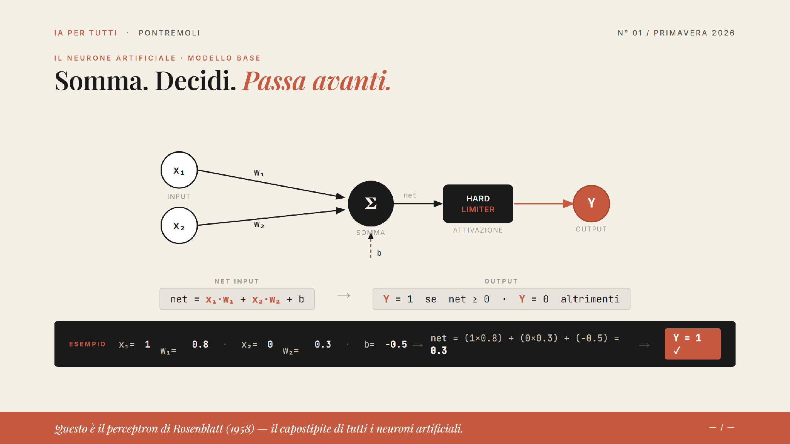
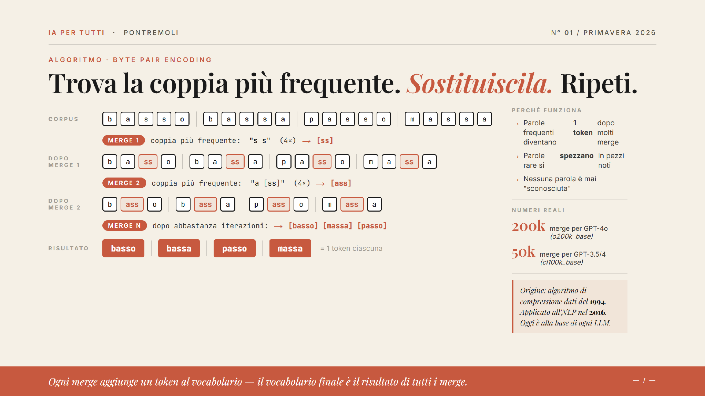
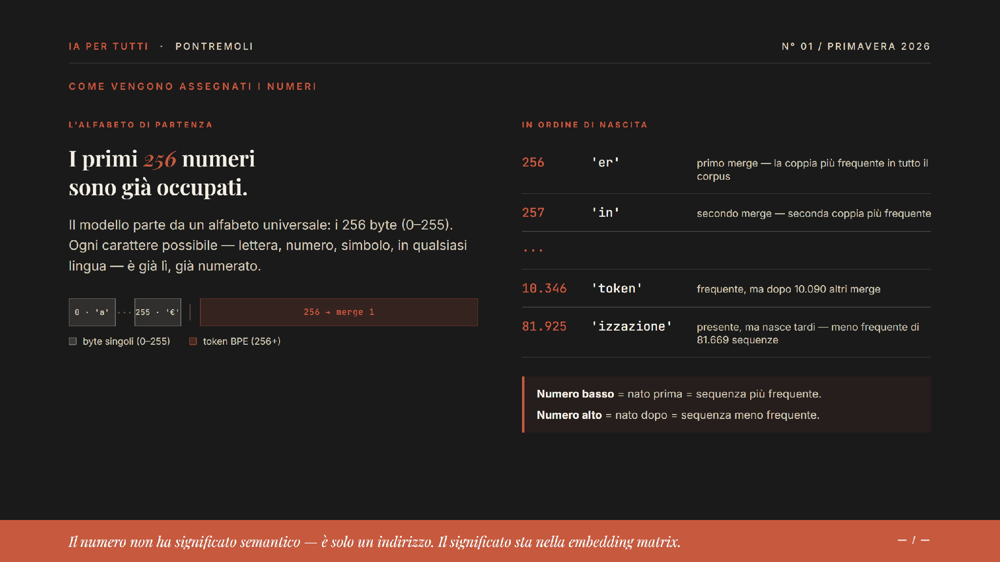
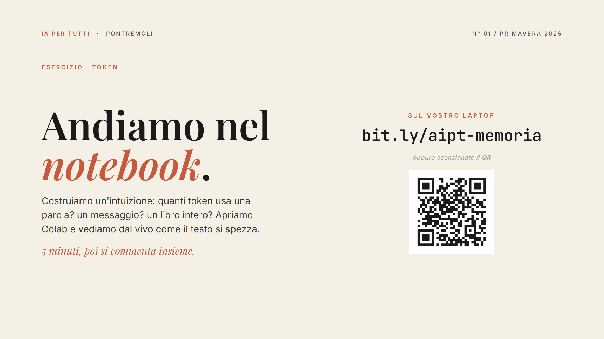

N° 01 / SPRING 2026 · PRACTICAL WORKSHOP · PART I
A lab to introduce the general public to current GenAI technology
Offered free to public libraries and cultural institutions
Gabriele Monti and Linda Petrini: idea, creating and execution
Alessandro Provetti: academic supervision
📚 Enormous training
Billions of texts, books, articles. Frozen at a precise date.
🌍 No perception of the world
It doesn’t know whether it’s raining outside. It doesn’t know who you are.
💬 Only explicit knowledge
It knows what has been written. It doesn’t know what is lived.
Polanyi (1966): “We know more than we can tell.” The model knows only what has been written down.
Just like synapses in the human brain, parameters are the weights of the connections between artificial neurons.
They are formed during training — then they are fixed.
Nobody can read a single parameter and understand what it means.
| Model | Parameters | Capability |
|---|---|---|
| Llama 3 8B | 8 billion | Simple tasks |
| Llama 3 70B | 70 billion | Advanced reasoning |
| GPT-4 (estimate) | ~1,800 billion | Complex analysis |
↑ More parameters = more patterns absorbed from human language.
More parameters = more generic knowledge, frozen. But still without any perception of the real world.
1 token ≈ ¾ of a word · “Artificial intelligence” ≈ 3 tokens
| Model | Context window | Approx. pages |
|---|---|---|
| GPT-3.5 | 16k tokens | ~12 pages |
| GPT-4o | 128k tokens | ~96 pages |
| Claude | 200k tokens | ~150 pages |
| Gemini 1.5 | 1M tokens | ~750 pages |
⚠️ When the window is full → it forgets the oldest messages. Quantity ≠ attention.
INPUT HIDDEN 1 HIDDEN 2 HIDDEN 3 OUTPUT
(Text in) → [0.82] → [0.67] → [0.91] → [0.74] → Response
↘ ↘ ↘
[connections] [connections] [connections]Training adjusts millions of weights until predictions become accurate. Then the weights are frozen forever.

The Rosenblatt perceptron (1958): inputs x₁ and x₂ are weighted (w₁, w₂), summed with bias b, then passed through a hard-limiter activation function to produce output Y.
This is Rosenblatt’s perceptron (1958) — the ancestor of all artificial neurons.
| # | Component | Description |
|---|---|---|
| 01 | System Prompt | Who the model is, how it behaves, what its role is. Written by the chatbot’s developer. |
| 02 | Your Prompt | Your question, your request. What you type right now. |
| 03 | The Entire Prior Chat | Every past message is re-injected at every turn. This is where context lives. |
| 04 | Memory from Past Chats | Often an automatic summary of previous conversations. |
All of this enters the context window together with every single message.
VS
How an AI model remembers (and forgets).
Linda Petrini · 20 May 2026
— Guess. Then we’ll look at it together.
Note
The model reads in tokens, not words. It’s its unit of measurement.
Pontremoli →
Pon·trem·oli
The model doesn’t read words. It reads tokens. Common words = 1 token; rare ones break into pieces.
“Hello, how are you?”
tokens. A greeting.
The Divine Comedy
tokens. The entire poem.
Today’s AI context windows: between 128,000 and 1,000,000 tokens.

BPE (Byte Pair Encoding) in action: starting from individual characters, the algorithm iteratively merges the most frequent pairs until whole common words become single tokens. GPT-4o uses ~200k merges; GPT-3.5/4 used ~50k.

Token ID assignment: the first 256 IDs are reserved for individual bytes (every possible character). IDs 256 and above are assigned in order of merge frequency — low number = born first = most frequent sequence.

Open the Colab notebook at bit.ly/aipt-memoria (or scan the QR code) to build an intuition: how many tokens does a word use? A message? An entire book?
5 minutes, then we discuss together.
| Model | Input · per million tokens | Output · per million tokens |
|---|---|---|
| Mistral Small 3 | $0.10 | $0.30 |
| GPT-5 Mini | $0.25 | $2.00 |
| Claude Haiku 4.5 | $1.00 | $5.00 |
| Gemini 3.1 Pro | $2.00 | $12.00 |
| Claude Sonnet 4.6 | $3.00 | $15.00 |
| Claude Opus 4.7 | $5.00 | $25.00 |
Summarising the Divine Comedy? From 3 cents on Mistral Small to €1.40 on Claude Opus.
Context runs out fast. It’s paid by the token. To stop making the AI start from scratch → memory.
The model doesn’t remember you. It’s the chatbot that rewrites the context, every time.
01 ### In-conversation The chat itself, while it’s open. Everything you’ve written is still there.
empties at end of chat
02 ### Automatic persistent ChatGPT Memory, Claude, Le Chat, Gemini. The chatbot saves facts about you in a file.
you curate it — it decides what to save
03 ### External persistent Projects, uploaded files, RAG. You decide what goes in. It doesn’t leave your space.
total control, more effort
Everything, without exception, is text that enters the context.
Memory is what the AI holds in its head. Retrieval is what it goes to look for when needed.
They often work together.
MEMORY
ChatGPT knows you’re a freelancer — you told it so in March.
RETRIEVAL
Claude goes searching through old chats, emails, or a file you uploaded.
Memory = you already know it. Retrieval = you go look for it now. Two different gestures.
| Chat history | Persistent memory | Editable | Free tier | Chat search | |
|---|---|---|---|---|---|
| ChatGPT | Yes | Yes, automatic | Yes (Settings → Memory → Manage) | Yes | Yes |
| Claude | Yes | Yes (recent) + Projects | Yes | Limited | Yes |
| Le Chat (Mistral) | Yes | Yes (Memories) | Partial (not individually) | Yes | Yes |
| Gemini | Yes | Yes (Saved info) | Yes | Varies by country | Partial |
| HuggingChat | Yes (threads) | No | N/A | Yes, open models | Yes |
UIs change every season. The concept stays: there is always a file of facts.
I open MY ChatGPT with my real memories. We go into Settings → Personalization → Memory → Manage. We read what the bot knows about me, add a fact, open a new chat, verify.
What you see now, you’ll do yourself in two minutes. Keep your laptop ready.
Laptop open, the chatbot you use most. Let’s look at your memory notepad.
Whoever finishes first → next slide.
| # | Step | Detail |
|---|---|---|
| 01 | Open your favourite chatbot | ChatGPT, Claude, Gemini, Le Chat… |
| 02 | Ask: “What do you know about me?” | often a surprise |
| 03 | Add a deliberate fact | e.g. “Remember that I love pesto.” |
| 04 | Open Settings → Memory | every app has its own path |
| 05 | Edit or delete a fact | your digital CV |
| 06 | Open a new chat and ask again “what do you know about me?” | verify |
It’s a text file. You read it, edit it, delete it. No magic.
In pairs. One tells, the other decides what to save. At the end, two verification questions — what you didn’t save, you’ve lost.
| # | Step | Detail |
|---|---|---|
| 01 | In pairs: one is A (user), one is B (chatbot). | |
| 02 | 3 min: A talks about themselves — week, work, one complaint. | fluid, no lists |
| 03 | B takes notes: max 5 facts. | what you’d save to memory |
| 04 | A asks 2 specific questions about details from the story. | |
| 05 | Check: does B have those details in the notes? | discuss what was noise and what should have been saved |
Even AI companies haven’t solved this well. Save too little = gaps. Save too much = noise.
Everything a chatbot “remembers” is text that enters the context. Curate it like you curate a CV.
Search, don’t remember
If the data is there (March chat, email, PDF), tell the bot to look for it. Retrieval beats memory.
“Remember that X” in chat
Try it instead of writing by hand in settings. Often the bot writes better what it decided to save. Experiment.
Delete on the fly
Three seconds to delete a wrong or old fact. No need to wait for a monthly clean-up.
Memory is you, the one who tends it. It’s your silent competitive advantage.
The model doesn’t remember you. It’s the chatbot that rewrites the context, every time, pretending to remember.
Thank you. The memory is yours. Tend it well.